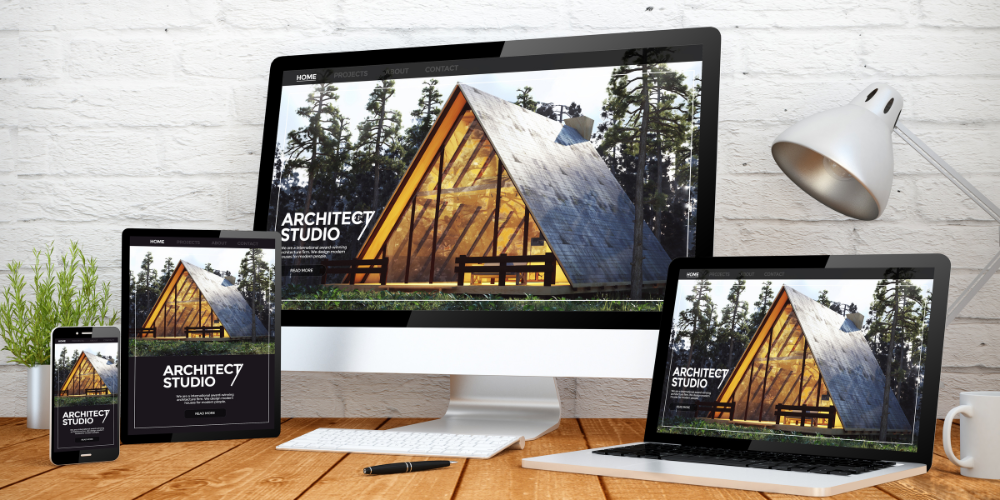

In Pakistan’s rapidly evolving digital landscape, responsive web design (RWD) has become essential for businesses aiming to establish a strong online presence. With a significant portion of the population accessing the internet via mobile devices, ensuring that websites are accessible and user-friendly across all screen sizes is no longer optional.
What is Responsive Web Design?

Responsive web design (RWD) is a modern web development approach aimed at creating websites that provide an optimal viewing and interaction experience across a wide range of devices, from desktop computers and laptops to tablets and smartphones. Rather than building multiple versions of a website to accommodate different screen sizes, responsive design ensures that a single version of the site automatically adjusts its layout, images, content, and functionalities according to the device’s screen size, orientation, and resolution.
This is accomplished using flexible grids, fluid images, and CSS media queries, which work together to dynamically scale and rearrange the website’s elements so that users can easily read and navigate the site without excessive scrolling, zooming, or panning. For example, in a responsive design, a three-column layout on a desktop might become a single-column layout on a mobile device, ensuring all content remains legible and accessible.
Responsive web design is not only a user-centric strategy but also a critical factor in modern SEO and digital marketing. Google, for instance, prioritizes mobile-friendly websites in its search rankings, meaning that a responsive website is more likely to appear higher in search engine results, thereby attracting more traffic.
In countries like Pakistan, where a large portion of internet users access websites through mobile phones, having a responsive design can dramatically improve user engagement, reduce bounce rates, and increase conversion rates. It also reduces development and maintenance costs by eliminating the need for multiple versions of a website, making it a cost-effective solution for businesses of all sizes.
Furthermore, responsive websites tend to have faster load times and better performance, which are both crucial for retaining visitors and delivering a smooth, consistent experience. In short, responsive web design is an essential practice in the digital era, combining aesthetics, functionality, and accessibility to create websites that serve users effectively regardless of how they access the internet.
Benefits of responsive web design
According to the Pakistan Telecommunication Authority (PTA), as of early 2024:
- Over 190 million people are cellular subscribers.
- More than 125 million are broadband users.
- The majority of users access the internet via mobile devices.
This surge in internet connectivity, fueled by widespread smartphone adoption and affordable data plans, has shifted user behavior dramatically. Most users are now mobile-first, and any business that doesn’t cater to this audience risks losing visibility and engagement.
Statista reports that over 60% of website traffic in Pakistan comes from mobile users, highlighting the need for mobile-optimized and responsive websites. Furthermore, a Google study shows that 53% of mobile users abandon websites that take more than 3 seconds to load, making responsive design critical for retaining visitors.
Additionally, websites that are mobile-friendly have a 67% higher chance of converting leads compared to non-responsive ones. These statistics strongly indicate that responsive web design is not just a trend but a necessity for Pakistani businesses aiming to improve visibility, user engagement, and digital performance in a competitive online environment.
Responsive web design in Pakistan is becoming increasingly essential for businesses aiming to succeed in today’s digital landscape. With the rapid rise in mobile and tablet users, having a website that adapts to all screen sizes is no longer optional—it’s a necessity. Companies offering responsive web design in Pakistan ensure that users have a seamless experience, whether they access a website on a desktop or a smartphone.
This flexibility not only improves user satisfaction but also boosts SEO rankings, as search engines like Google favor mobile-friendly websites. Investing in responsive web design also reduces the cost and effort of managing multiple versions of a website, making it a smart and efficient solution for modern businesses. Whether you’re launching a new site or updating an old one, choosing responsive web design services guarantees improved engagement, better performance, and long-term growth for your online presence.
Choosing responsive web design in Pakistan is a strategic move for any business looking to stay competitive in the digital market. As more customers use mobile devices to browse and shop online, having a responsive website ensures that your brand is accessible and professional on all platforms.
To get better services, check our website
Expert developers offering responsive web design in Pakistan focus on creating flexible layouts, optimized images, and smooth navigation that adjust perfectly to any screen size. This not only enhances the user experience but also increases the chances of converting visitors into loyal customers. By partnering with a trusted responsive web design agency, businesses can improve their website’s performance, reduce bounce rates, and build a strong online reputation that stands out in a crowded market.
1. Enhanced User Experience: Responsive web design in Pakistan
Responsive design ensures that a website adapts seamlessly to various devices, providing users with an optimal viewing experience. This adaptability leads to increased user engagement and satisfaction, as visitors can easily navigate and interact with the site regardless of the device they’re using. VirtualReality
2. Increased Mobile Traffic
With the proliferation of smartphones in Pakistan, a significant amount of web traffic originates from mobile devices. Implementing RWD allows businesses to cater to this growing audience, capturing more mobile traffic and expanding their reach.
3. Improved SEO Performance
Search engines like Google prioritize mobile-friendly websites in their rankings. By adopting responsive design, businesses can enhance their SEO performance, leading to increased visibility and higher search engine rankings.
4. Cost-Effective Maintenance
Maintaining separate websites for desktop and mobile users can be resource-intensive. Responsive design streamlines this process by consolidating the website into a single platform that functions across all devices, reducing development and maintenance costs.
5. Future-Proofing the Website
As new devices with varying screen sizes enter the market, responsive websites are better equipped to adapt without requiring significant redesigns. This flexibility ensures that businesses remain current with technological advancements and user preferences.
6. Higher Conversion Rates
A consistent and user-friendly experience across devices increases the likelihood of visitors engaging with the website’s content and completing desired actions, such as making purchases or filling out contact forms. This consistency can lead to higher conversion rates and improved business outcomes.
7. Competitive Advantage
In a competitive market, having a responsive website can set a business apart from competitors who have not yet adopted this approach. It demonstrates a commitment to providing the best possible user experience, which can enhance brand reputation and customer loyalty.
Conclusion
In conclusion, investing in responsive web design in Pakistan is crucial for businesses that want to thrive in today’s digital era. A responsive website not only provides an excellent user experience across all devices but also improves search engine rankings and boosts overall engagement. By choosing professional responsive web design services, companies can ensure their online presence is adaptable, efficient, and future-proof. Embracing responsive web design is a smart step toward maximizing reach, enhancing brand credibility, and driving sustainable growth in an increasingly mobile-driven world.
For Pakistani businesses aiming to thrive in the digital age, responsive web design is not just a trend but a necessity. It offers numerous benefits, including improved user experience, increased mobile traffic, better SEO performance, cost savings, and a competitive edge. By investing in RWD, businesses can ensure they meet the evolving needs of their audience and remain relevant in a dynamic online environment.